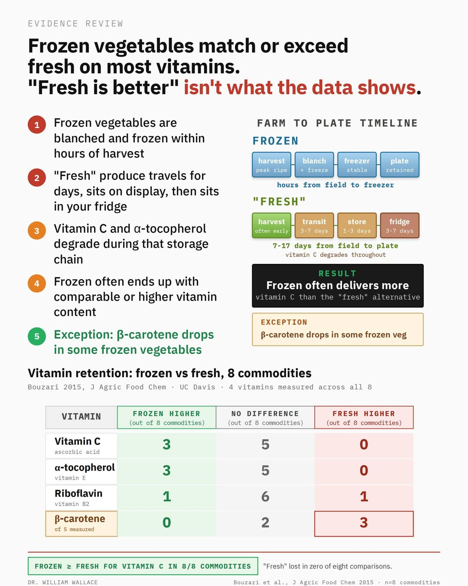

Frozen fruits and vegetables are an excellent way to increase your intake of whole plant foods. They are fast and convenient. In some ways, they might even be superior to fresh fruits and vegetables.
#vegetablesHD #fruitHD
The assumption that fresh produce is nutritionally superior to frozen is one of the most durable beliefs in modern eating. It is also not what the data shows.
Bouzari and colleagues (2015, Journal of Agricultural and Food Chemistry) ran a controlled comparison at UC Davis, measuring four vitamins across eight commodities (corn, carrots, broccoli, spinach, peas, green beans, strawberries, blueberries) under both fresh and frozen storage conditions. The vitamins were ascorbic acid (vitamin C), α-tocopherol (vitamin E), riboflavin (B2), and β-carotene. Each commodity was sampled at three storage time points per condition.
For vitamin C, frozen samples were higher than fresh in 3 of 8 commodities and statistically equivalent in the remaining 5. Frozen lost in zero of eight comparisons.
For α-tocopherol, the pattern was identical. Frozen higher in 3 of 8, equivalent in the remaining 5, and never lower.
For riboflavin, 6 of 8 commodities showed no difference. Broccoli was higher in frozen, peas were higher in fresh. A wash.
For β-carotene, the pattern flipped. β-carotene was only present in measurable amounts in 5 of the 8 commodities (not in blueberries, strawberries, or corn). Of those 5, frozen was lower in 3 commodities (peas, carrots, and spinach showed measurable losses), with the remaining commodities showing no significant difference. β-carotene is the one vitamin where fresh tends to win.
The mechanism behind this pattern is straightforward. Frozen vegetables are blanched and frozen within hours of harvest, locking in the nutrient content at peak. The storage chain that follows ("the freezer aisle") is biochemically stable. Vitamin C, in particular, is held essentially indefinitely at standard freezer temperatures.
"Fresh" produce, by contrast, takes a different path. Commercial fresh vegetables are harvested days before they reach the supermarket. They sit in cold-chain transit for 3 to 7 days. They sit on display for 1 to 3 days. Then they sit in your refrigerator for another 3 to 7 days before you cook them. The full journey from field to plate is often 7 to 17 days, and vitamin C degrades meaningfully across that window.
By the time a head of broccoli has been in your fridge for a week, the frozen broccoli in the freezer aisle has retained more of its vitamin C than the "fresh" alternative on your plate. That is the finding.
What this does not mean. Frozen is not universally superior. β-carotene losses are real for some vegetables. Texture, taste, and certain phytochemicals not measured by Bouzari may differ between fresh and frozen. Garden-harvested produce eaten the day it is picked is a different category entirely and is not what this study measured. The relevant comparison is supermarket "fresh" vs. supermarket "frozen," which is what most people are actually choosing between.
What this does mean. The "fresh is better" assumption that drives produce purchasing decisions is not supported by the data on vitamin retention. For vitamin C and vitamin E, frozen vegetables are at least as good as fresh in every commodity tested, and better in nearly half of them. For most home cooks, the practical implication is that the frozen aisle deserves a serious look, especially for vegetables you will not get to within a couple of days of buying.
A note on the study itself. Bouzari 2015 measured 8 commodities and 4 vitamins. It is not a meta-analysis. It is a single well-designed study from UC Davis that has been broadly consistent with the wider food science literature. The findings would be stronger if replicated across more commodities and more nutrients, but the underlying biochemistry is well-understood and not in serious dispute.
Same vegetable. Different supply chain. Different vitamin retention.
Bouzari et al., Journal of Agricultural and Food Chemistry, 2015
